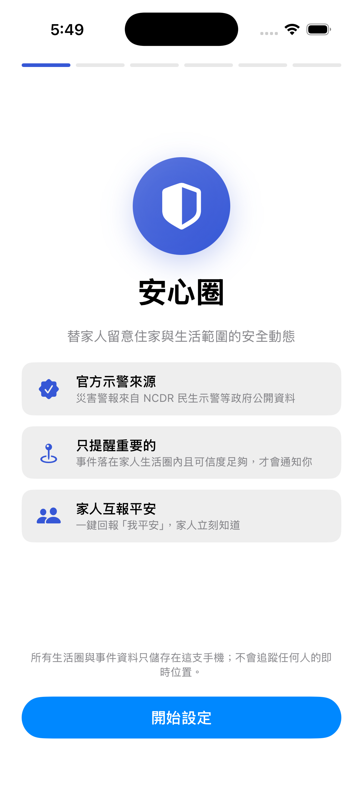
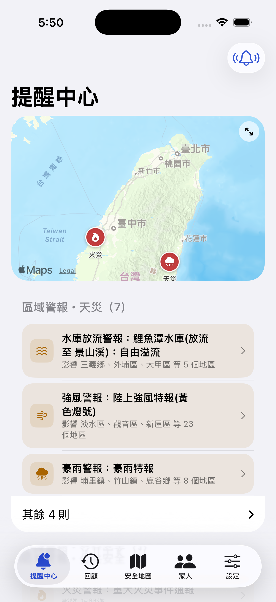
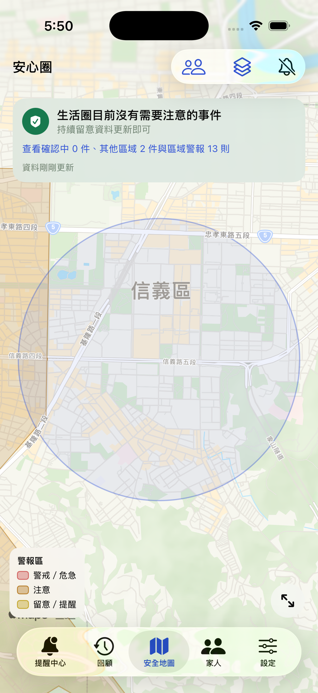
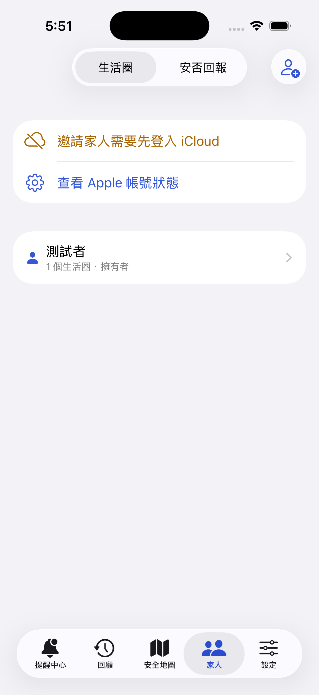

ZERO-TRACKING FAMILY DISASTER GUARD
不追蹤家人的位置，
只守護家人的生活圈。
安心圈是一款零位置追蹤的家人災害守護 App：不看家人在哪裡， 只監看政府官方災害示警是否落在家人的生活圈——住家、長輩家——附近。 警報命中才提醒，家人一鍵回報平安。資料是真的，後端是自建的，界線是說清楚的。
PROBLEM & SOLUTION
關心家人的安全，
為什麼一定要交出行蹤？
現有做法的兩難
- Life360、尋找這類 App 用「即時定位」換安心——長輩覺得被監視，子女覺得像查勤，關心變成張力。
- 政府災防告警簡訊只看「你人在哪」，不看「你牽掛的人住哪」；爸媽住彰化，人在台北的你什麼都收不到。
- 官方警報管道一次轟炸全部類別，與自己無關的警報看多了，真正要緊的那一則反而被滑掉。
安心圈的答案：守護範圍，而非追蹤人
- 設生活圈——住家、長輩家，位置與半徑由你決定，只存本機。
- 比對官方示警——NCDR 43 類政府示警即時進來，落在生活圈附近才提醒，並附上「為何收到」的理由。
- 一鍵報平安——iCloud 家庭圈安否回報＋已讀回條，讓「我平安」這句話即時送達全家。
FIVE SCREENS, ONE STORY
五個畫面，講完整個故事。
畫面中的示範事件為 NCDR 實際發布過的官方示警原文，標題主動標示【歷史示範】——不冒充即時警報，是我們的誠實原則。

先說清楚界線第一個畫面就承諾：不追蹤任何人的位置，資料只存在這支手機。

只提醒要緊的NCDR 真實示警自動分類——落在家人生活圈的才「需要注意」，其餘不打擾。

看得懂的地圖區域警報用行政區塗層、不用誤導的大頭針；避難所與急救醫院是全國近 6,000 筆真實開放資料。

理由透明每一則提醒都說得出「為何收到」——來源、可信度、跟哪個生活圈有關，一行講清楚。

平安有回音長輩一鍵回報「我平安」，全家透過 iCloud 即時看到，已讀回條讓關心有了回音。
REAL DATA, REAL BACKEND
不是假 Demo：自建的真資料鏈路。
安否回報與已讀回條走 iCloud 家庭圈，零自建帳號系統；避難所／醫院近 6,000 筆開放資料內嵌於 App，離線可查。
App 已完成權杖註冊、通知 deep link 全鏈路（Apple Push Console 實測可達）；Oracle 端自動發送服務為下一步。
PRODUCT ETHICS
安全 App 的每一個像素，
都是倫理決策。
未驗證，不推播
未經官方確認的線索只在 App 內顯示，絕不推播打擾；每一則推出去的通知，都附上看得懂的「為何收到」理由。
統計 ≠ 即時安全
治安參考圖層主動標示「季度統計不等於即時安全程度」，只呈現高於全國中位數的分級——避免資料被誤讀成對社區的標籤。
塗層，不是大頭針
強風豪雨影響的是整個行政區，釘一根大頭針會誤導成單點事故——所以區域警報用行政區塗層呈現，準確傳達影響範圍。
Life360 追蹤人。
安心圈守護範圍。
TEAM & LINKS
看更多。
技術棧：SwiftUI · SwiftData（本地優先）· CloudKit CKShare · MapKit · APNs（App 端垂直切片）·
自建 Python 爬蟲（Mac Mini）· Oracle Cloud 中繼 API · Nginx。
資料來源：NCDR 民生示警公開資訊、內政部消防署避難收容處所、衛福部急救責任醫院名單、政府開放資料平台。